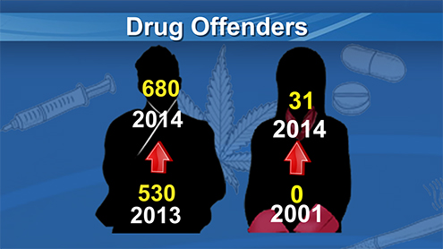

| Introduction |
| Introduction | Why People Abuse Drug? | Impacts of Drugs | How To say No To Drugs |
Fortunately, treatments are available to help people counter addiction’s powerful disruptive effects. Research shows that combining addiction treatment medications with behavioral therapy is the best way to ensure success for most patients. Treatment approaches that are tailored to each patient’s drug abuse patterns and any co-occurring medical, psychiatric, and social problems can lead to sustained recovery and a life without drug abuse.
Similar to other chronic, relapsing diseases, such as diabetes, asthma, or heart disease, drug addiction can be managed successfully. And as with other chronic diseases, it is not uncommon for a person to relapse and begin abusing drugs again. Relapse, however, does not signal treatment failure rather, it indicates that treatment should be reinstated or adjusted or that an alternative treatment is needed to help the individual regain control and recover.
Drug addiction is a preventable disease. Education and outreach are key in helping youth and the general public understand the risks of drug abuse. Teachers, parents, and medical and public health professionals must keep sending the message that drug addiction can be prevented if one never abuses drugs.